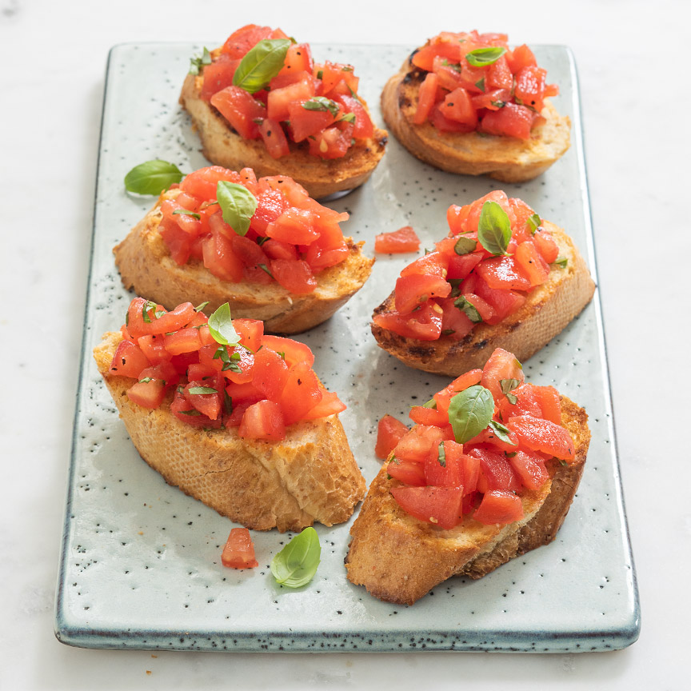

Hét recept voor klassieke bruschetta's met tomaten en basilicum op een
krokant broodje. Dit hapje valt bij iedereen in de smaak.
Ingredienten
- 1 8 sneetjes stokbrood
- 4 tomaten van goede kwaliteit
- 1 teen knoflook
- Handje verse basilicum
- peper en zout
- olijfolie
Bereidingsweize
- Vul een kom met kokend heet water. Snijd met een mes een
kruis aan de onderkant van de tomaten.
Leg de tomaten een minuutje in het water en spoel
ze af moet koud water. Als het
goed is moet nu het velletje makkelijk te verwijderen zijn.
Snijd ook het waterige gedeelte met de zaadjes er uit en snijd
het vruchtvlees in kleine blokjes.
- Doe de stukjes tomaat in een kom en voeg een klein beetje olijfolie toe.
- Hak de basilicum fijn en schep door de tomaten.
Breng het tomatenmengsel op smaak met een snufje peper en zout.
- Snijd het brood in plakken en bestrijk aan beide kanten met een
beetje olijfolie. Grill het brood aan beide kanten in een
grillpan (of oven) knapperig.
- Wrijf met een teentje knoflook over de
bovenkant van de knapperige broodjes.

🛈 Tip Je kunt het bruschetta mengsel meteen gebruiken of afgedekt in de koelkast laten marineren (hele nacht kan ook) voor een intensere smaak.